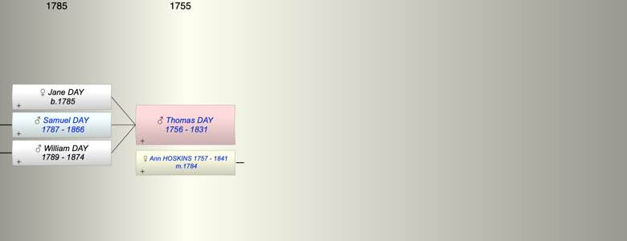

| [Index] |
| Thomas DAY (1756 - 1831) |
|  |
| b. 1756 at Est |
| m. 11 Apr 1784 Ann HOSKINS (1757 - 1841) at Ditcheat, Somerset |
| d. 1831 at Ditcheat, Somerset aged 75 |
| Near Relatives of Thomas DAY (1756 - 1831) | ||||||
| Relationship | Person | Born | Birth Place | Died | Death Place | Age |
| Father in Law | Samuel HOSKINS | 1715 | Ditcheat, Somerset | |||
| Mother in Law | Mary SNOOK | |||||
| Self | Thomas DAY | 1756 | Est | 1831 | Ditcheat, Somerset | 75 |
| Wife | Ann HOSKINS | 1757 | Est | 1841 | Ditcheat, Somerset | 84 |
| Daughter | Jane DAY | 07 Apr 1785 | Ditcheat, Somerset | |||
| Son | Samuel DAY | 11 May 1787 | Ditcheat, Somerset | 1866 | Hornblotton | 79 |
| Son | William DAY | 17 Jan 1789 | Ditcheat, Somerset | 1874 | 85 | |
| Son in Law | Thomas MARTIN | |||||
| Daughter in Law | Alice MARTIN | 1787 | Hornblotton, Somerset | 1866 | Hornblotton | 79 |
| Daughter in Law | Ann DREDGE | 1796 | Croscombe, Somerset | 1886 | Ditcheat, Somerset | 90 |
| Granddaughter | Harriet DAY | 17 Oct 1812 | Ditcheat, Somerset | 24 Sep 1863 | 50 | |
| Grandson | Samuel DAY | 1814 | Ditcheat, Somerset | 24 Sep 1876 | Walpole Haldimand Ontario Canada | 62 |
| Grandson | Edmund DAY | 1816 | Ditcheat, Somerset | 1872 | 56 | |
| Granddaughter | Jane DAY | 1823 | Ditcheat, Somerset | |||
| Grandson | James Dredge DAY | 1815 | Ditcheat, Somerset | 1851 | Ditcheat, Somerset | 36 |
| Grandson | William DAY | 1817 | Ditcheat, Somerset | |||
| Granddaughter | Henrietta DAY | 17 Jun 1819 | Ditcheat, Somerset | 1843 | Ditcheat, Somerset | 24 |
| Grandson | John DAY | 1822 | Ditcheat, Somerset | |||
| Granddaughter | Mary DAY | 1824 | Ditcheat, Somerset | 1877 | Ditcheat, Somerset | 53 |
| Grandson | Charles DAY | 1826 | Ditcheat, Somerset | 1847 | Ditcheat, Somerset | 21 |
| Grandson | George DAY | 1828 | Ditcheat, Somerset | 1828 | Ditcheat, Somerset | 0 |
| Granddaughter | Anna DAY | 1830 | Ditcheat, Somerset | |||
| Granddaughter | Martha DAY | 1830 | Ditcheat, Somerset | |||
| Grandson | George DAY | 1833 | Ditcheat, Somerset | |||
| Grandson | Joseph DAY | 1836 | Ditcheat, Somerset | |||
| Niece | Ann POUNSET | 1783 | ||||
| Nephew | James HOSKINS | |||||
| Niece | Elizabeth HOSKINS | 1768 | ||||
| Nephew | Samuel HOSKINS | 1771 | 1808 | Ditcheat, Somerset | 37 | |
| Niece | Mary HOSKINS | 1774 | ||||
| Nephew | John Hollard HOSKINS | 1775 | ||||
| Nephew | WIlliam HOSKINS | abt 1775 | 1836 | Ditcheat | 61 | |
| Nephew | Ralph Maby HOSKINS | 1780 | Ditcheat, Somerset | |||
| Niece | Sarah HOSKINS | 1782 | ||||
| Niece | Ann HOSKINS | 1786 | ||||
| Nephew | Thomas HOSKINS | 1786 | 1807 | Ditcheat | 21 | |
| Sister in Law | Mary HOSKINS | 1743 | ||||
| Brother in Law | John HOSKINS | 1745 | Ditcheat, Somerset | 1824 | 79 | |
| Brother in Law | Samuel HOSKINS | 1747 | Ditcheat, Somerset | |||
| Sister in Law | Betty HOSKINS | 1751 | Ditcheat, Somerset | 1756 | Ditcheat, Somerset | 5 |
| Brother in Law | James HOSKINS | 1751 | Ditcheat, Somerset | |||
| Brother in Law | Thomas HOSKINS | 1756 | Ditcheat, Somerset | |||
| Brother in Law | James HOSKINS | 1759 | Ditcheat, Somerset | |||
| Sister in Law | Dinah HOSKINS | 1761 | Ditcheat | 1801 | Ditcheat, Somerset | 40 |
| Events in Thomas DAY (1756 - 1831)'s life | |||||
| Date | Age | Event | Place | Notes | Src |
| 1756 | Thomas DAY was born | Est | |||
| 11 Apr 1784 | 28 | Married Ann HOSKINS (aged 27) | Ditcheat, Somerset | Note 1 | |
| 07 Apr 1785 | 29 | Birth of daughter Jane DAY | Ditcheat, Somerset | Note 2 | |
| 11 May 1787 | 31 | Birth of son Samuel DAY | Ditcheat, Somerset | Note 3 | |
| 17 Jan 1789 | 33 | Birth of son William DAY | Ditcheat, Somerset | Note 4 | |
| 1831 | 75 | Thomas DAY died | Ditcheat, Somerset | Note 5 | |
| Personal Notes: |
| marriage to Ann from Familysearch at Ditcheat 11/4/1784 |
| Created on a Mac™ using iFamily for Mac™ on 15 Sep 2023 |